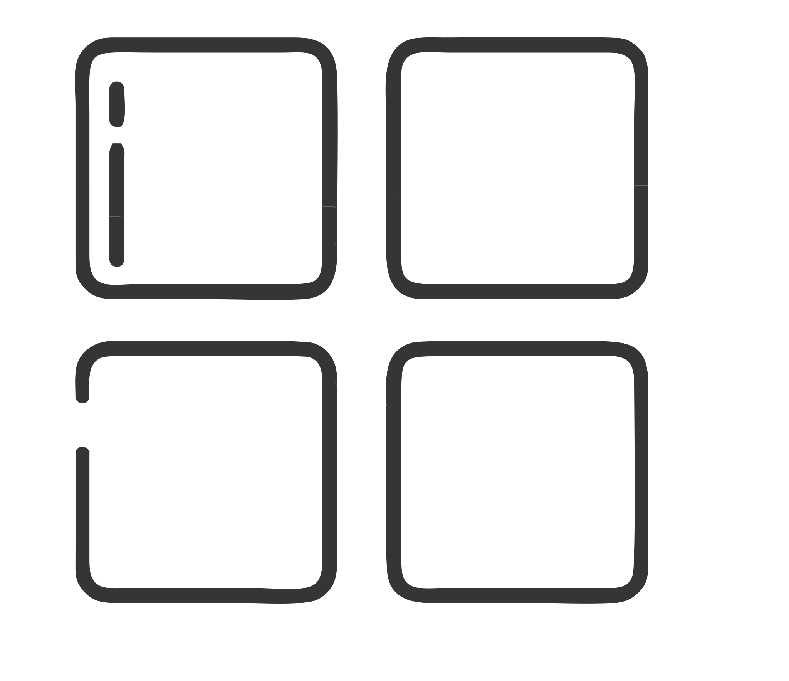
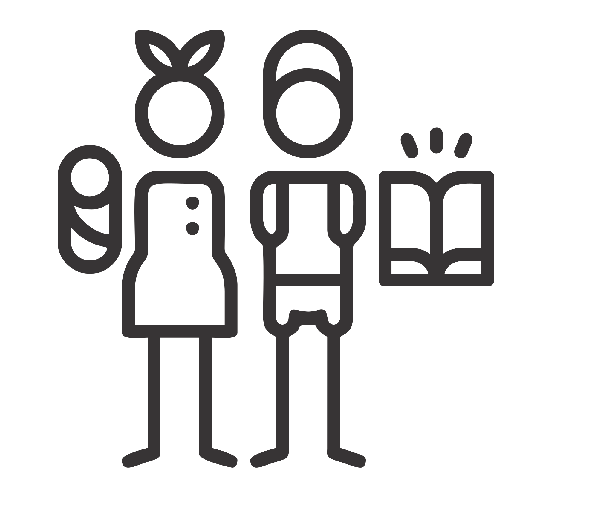

<mat-sidenav-container >
    <mat-sidenav #sidenav="matSidenav" mode="side" opened="true">
        <div class="logo">
            
        </div>
        <div class="options">
            <div class="principal-options">
                <div class="sidebar-option" (click)="closeSidenavIf()" routerLink="/menu">
                    
                    <p class="text-option">Menú</p>
                </div>
                <div class="sidebar-option" (click)="closeSidenavIf()" routerLink="/encuestas">
                    
                    <p class="text-option">Encuestas</p>
                </div>
                <div class="sidebar-option" (click)="closeSidenavIf()" routerLink="/perfil">
                    
                    <p class="text-option">Perfil</p>
                </div>
                <div class="sidebar-option" (click)="closeSidenavIf()" routerLink="/familia">
                    
                    <p class="text-option">Registrar Familiar</p>
                </div>
            </div>
            <div class="logout-option">
                <div class="sidebar-option" (click)="authService.logOut()">
                    
                    <p class="text-option">Cerrar Sesión</p>
                </div>
            </div>
        </div>
    </mat-sidenav>

    <mat-sidenav-content>
      <button class="toggle-button" mat-icon-button *ngIf="sidenav.mode === 'over' || !sidenav.opened" (click)="sidenav.toggle()">
          <mat-icon *ngIf="!sidenav.opened">
              menu
          </mat-icon>
          <mat-icon *ngIf="sidenav.opened">
              close
          </mat-icon>
      </button>  
        <div class="content">
          <router-outlet name='patients-content'></router-outlet>
        </div>
    </mat-sidenav-content>
</mat-sidenav-container>